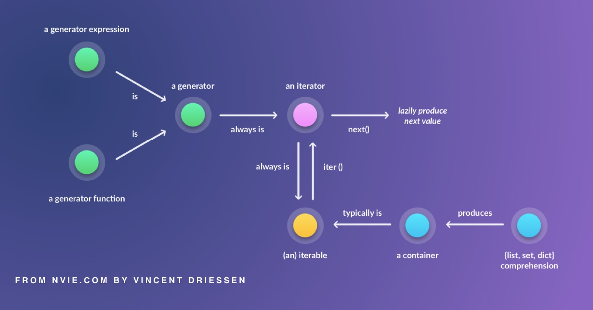
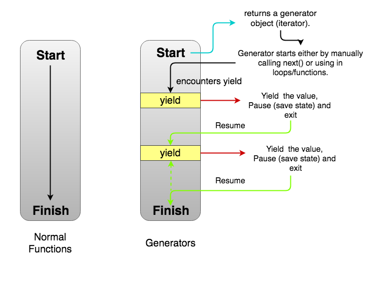
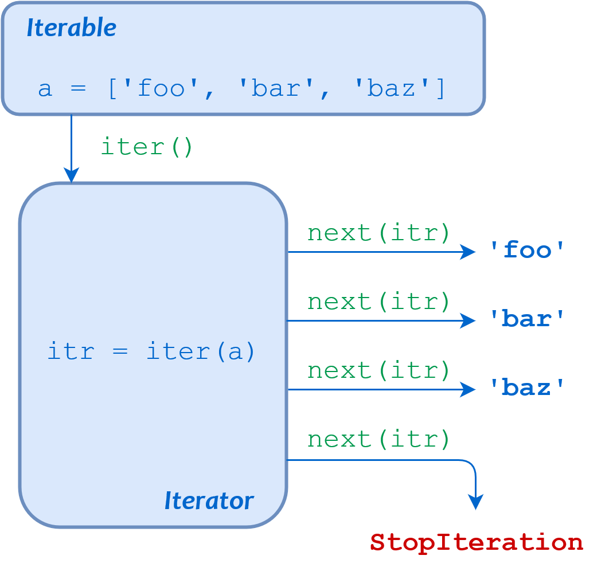

Hello Functions!
An anonymous lambda function: 35 * 1134 = 39690
# A lambda function can take any number of arguments,
# but can only have one expression.
multiplyTwoNumbers = lambda x, y: x * y
print(multiplyTwoNumbers(35, 1134))
Greatest Common Divisor of 35, 1134 = 7 (Euclides' GCD)
def gcd(x, y):
""gcd(x, y) = gcd(y, x%y)""
while x:
x, y = y % x, x
return y
35, 1134 = 1134 % 35, 35
14, 35 = 35 % 14, 14
7, 14 = 14 % 7, 7
0, 7 => return 7
17 * 23 = 391 (Ladislas Aub's example)
def
Product(a, b):
""Product using bitwise operators and additions only.""
p = 0
while (b != 0):
if (b & 1): # get the first (rightmost) bit of 'b'
p += a
a <<= 1 # shift to the left (inserts a 0 bit on the right)
b >>= 1 # shift to the right (drops the rightmost bit)
return p
← 10001 × 17 × (24+20)
10111 → 23 (24+22+21+20)
----- ----------
10001 + 1* 1*10001 + 10001 << 0
100010 1* 2*10001 10001 << 1
1000100 1* 4*10001 10001 << 2
0 0* 8*10001 10001 << 3
100010000 1*16*10001 10001 << 4
--------- ----------
110000111 391
17 ×
23 (2*10+3)
---- --------
51 + 3* 1*17 + 17 << 0
34 2*10*17 17 << 1
---- --------
391 391
def
Product(a, b, base=10):
""Product using integer division/product, mod and additions.""
p = 0
while (b != 0):
d = b % base # rightmost bit of b (
mod)
if (d):
p +=
d * a
a *= base # shift to the left
b //= base # shift to the right (integer division)
return p
100011 ×
10001101110
-----------
0
1000110
10001100
100011000
0
10001100000
100011000000
0
0
0
1000110000000000
----------------
1001101100001010 = 39690
Python is an Object Oriented
Imperative language.
However, ...



The smallest integer divisible by all integers in the range(1, i+1= ) is:
- LCM = lambda m: reduce
(lambda a, b: a*b//gcd(a, b), range(1, m+1))
- res = 1 * 2 // gcd(1, 2)
- res = res * 3 // gcd(res, 3)
- res = res * 4 // gcd(res, 4)
- ...
- res = res * m // gcd(res, m)
- LCM(1, m) → res
- The iterable (range) has been reduced to a single value,
by repetitively applying a function to all of its members.
Unification of int and long:
- Python 3 does not have a long type.
- int itself allows large values (limited only by available memory).
- Python 2’s long was renamed to int.
{kind=link}
{kind=link}
{kind=link}